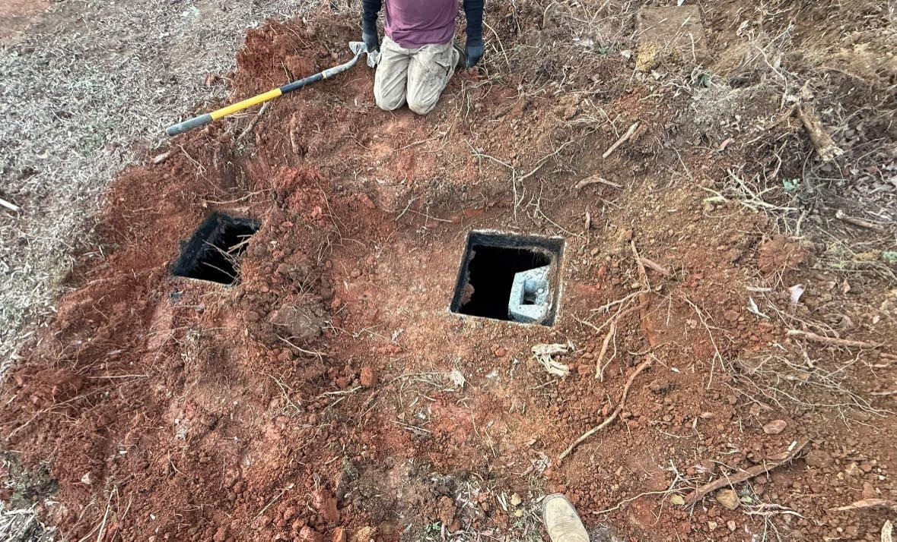

Septic Services in Mineral Springs, NC
Mineral Springs has the kind of rural Union County properties where a healthy septic system really matters. Redline serves homeowners across Mineral Springs, nearby Waxhaw, Wesley Chapel, and Monroe with licensed septic pumping, repairs, inspections, and 24/7 emergency response.
Septic Pumping Near Me in Mineral Springs, NC
If you're searching for septic pumping near me in Mineral Springs, Redline is based in nearby Monroe, NC and serves Mineral Springs with same-day scheduling on most calls. We're licensed, local, and available 24/7 for emergencies. Call (704) 562-9922 to schedule.

Septic Services We Provide in Mineral Springs
We handle the full range of residential septic work for Mineral Springs homes, wooded lots, acreage properties, and rural roads throughout southwest Union County.
What to Know About Septic Systems in Mineral Springs
Mineral Springs sits between Monroe, Waxhaw, and Wesley Chapel, with a lot of homes on private septic instead of public sewer. Larger lots are a strength for septic systems, but local soil, tree cover, and older system layouts can still create problems if maintenance gets skipped.
- Rural lots and private septic are common. Many Mineral Springs homes sit outside dense municipal sewer coverage, so tank condition, pump schedule, drain field health, and clear access lids matter more than they would in a city-sewer neighborhood.
- Union County clay can slow absorption. Mineral Springs properties often deal with Piedmont red clay and seasonal wet spots. When a drain field is overloaded, compacted, or aging, slow drains, gurgling fixtures, and damp areas over the field are early warning signs.
- Wooded properties need root awareness. Roots from mature trees can push into old lines, distribution boxes, or weak spots in the drain field. We check for signs of root intrusion during repairs and inspections.
- Real estate inspections are important. Mineral Springs buyers often look at acreage homes, older homes, or properties with additions. A septic inspection before closing helps confirm the tank size, visible condition, baffle health, and whether the system matches the home.
Emergency in Mineral Springs? Stop running water if sewage is backing up, keep people and pets away from wet or contaminated areas, and call Redline at. We provide 24/7 emergency septic service across Union County.
Quick Facts
| Factor | Detail |
|---|---|
| Septic Pumping Cost | Flat rate, no deposit required |
| Same-Day Scheduling | Available for most routine and non-emergency calls |
| Rural lots, private septic are common | Many homes sit outside municipal sewer coverage, so tank condition and drain field health matter more. |